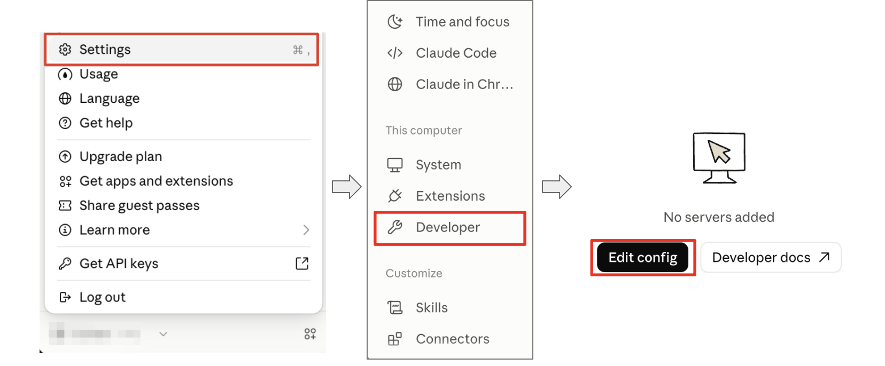
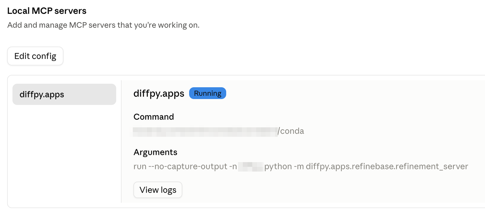
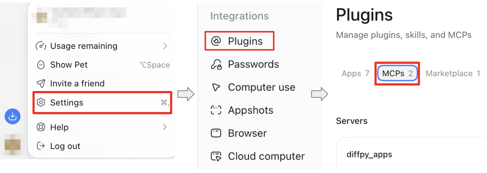

DiffPy Agent Interface
This interface is provided for agents, e.g. Claude Code and Codex,
which mainly utilizes the “tool” concept applied in most agent frameworks.
After connecting these tools to an agent, users can invoke DiffPy
functionalities and automate PDF refinements through conversation.
After you have installed diffpy.apps, the next step is to connect it to
your local agent. diffpy.apps server should be able to connect to any
Desktop agent that supports the MCP (Model Context Protocol), and we have provided
instructions for Connect to Claude Desktop and Connect to ChatGPT Desktop below.
Setup
Connect to Claude Desktop
1. Copy the path to the conda executable. There are many commands available, here are two examples
whereis conda # linux or macOS terminal
where.exe conda # windows powershell
Install
Claude Desktop(hereafter referred to asClaude).Open
Claudeand open “Settings”.Navigate to the “Developer” section.
In the “Local MCP servers” region, click “Edit Config” and Open the configuration file. It’s name should be
claude_desktop_config.json.

Figure 1: Screenshot of “Edit Config” in Claude.
Add the following configuration, and replace
</path/to/conda>with the path to your conda executable and<conda_env_name>with the name of your conda environment.
"mcpServers": {
"diffpy.apps": {
"command": "</path/to/conda>",
"args": [
"run",
"--no-capture-output",
"-n",
"<conda_env_name>",
"python",
"-m",
"diffpy.apps.parametric_refinement.refinement_server"
]
}
}
For example, If Mr Neutron installed diffpy.apps in the diffpy_apps
conda environment, his claude_desktop_config.json in the Linux/macOS system
would look like this:
{
"mcpServers": {
"diffpy.apps": {
"command": "/path/to/bin/conda",
"args": [
"run",
"--no-capture-output",
"-n",
"diffpy_apps",
"python",
"-m",
"diffpy.apps.parametric_refinement.refinement_server"
]
}
},
"other_configurations": "other_configurations"
}
, and in the Windows system, it would look like this:
{
"mcpServers": {
"diffpy.apps": {
"command": "C:\\path\\to\\bin\\conda.bat",
"args": [
"run",
"--no-capture-output",
"-n",
"diffpy_apps",
"python",
"-m",
"diffpy.apps.parametric_refinement.refinement_server"
]
}
},
"other_configurations": "other_configurations"
}
Restart the
Claude.
8. Go to the same “Local MCP servers” section and verify that the
diffpy.apps server is listed and active.

Figure 2: Screenshot of active diffpy.apps server in Claude.
Connect to ChatGPT Desktop
1. Copy the path to the conda executable. There are many commands available, here are two examples
whereis conda # linux or macOS terminal
where.exe conda # windows powershell
Install
ChatGPT Desktop(hereafter referred to asChatGPT).Open
~/.codex/config.toml.Add the following configuration, and replace
<path/to/python>with the path to the Python executable in your conda environment.
[mcp_servers.diffpy_apps]
command = "<path/to/conda>"
args = [
"run",
"--no-capture-output",
"-n",
"<conda_env_name>",
"python",
"-m",
"diffpy.apps.parametric_refinement.refinement_server"
]
Note
In Windows, please make sure the full path is separated by
double backslashes (e.g., C:\\path\\to\\bin\\conda.bat).
Restart the
ChatGPT.
5. Open “Settings”, and navigate to the “Integration” section. Open
“Plugins” tab, and verify that the diffpy.apps server is listed in the
“MCPs” field and active.

Figure 2: Screenshot of active diffpy.apps server in ChatGPT.
Example Usage
Once you diffpy.apps MCP server is running, you can interact with it
through the agent.
Here is a simple example of conducting Ni structure refinement.
1. Download the Ni.gr and Ni.cif
files to your working directory.
2. Open Claude, launch the “Code” tab or select “Cowork” in “Chat or Cowork”
tab.
Add the working directory folder to the
Claude.
4. Start your conversation! For example, try to ask Tell me what can diffpy.apps do and how it can help me refine the Ni.cif against the Ni.gr.
How to add Diffpy agent skills
Another advantage of using the Diffpy agent is that its behavior can be tuned to suit specific tasks and workflows by adding custom skills and context.
We have prepared a basic skill that you can readily deploy and use with the Diffpy agent.
To use it, run
diffpy-app agentify
claude and codex agent skills are supported. By default, it is
deployed as the claude agent skill. Use the --agent option to
specify the specific agent:
diffpy-app agentify --agent codex
To deploy the agentic skill to the system directory, use the --system flag:
diffpy-app agentify --system
To update the existing diffpy.cmi agentic skill, use the --update flag:
diffpy-app agentify --update
When the agent fails
An agent using diffpy.apps is not guaranteed to handle every complicated PDF
refinement task by itself. Its success relies on tools in
diffpy.apps being executed in the correct order, and the knowledge of
how to generate the correct sequence of tool invocations comes from the
LLM itself, the agent skills we have prepared, the local context and
the user’s prompt.
When the agent cannot handle a situation automatically, the user may need to intervene and manually guide the refinement process by providing instructions about the expected tool and arguments.
Try to ask “Please summarize available tools inside diffpy.apps concisely.”, and you will get the response similarly to this
diffpy.apps is a set of 28 tools for running diffpy.srfit-style refinements,
such as PDF fits, in a stateful session. Here they are by job:
...
Getting familiar with the available tools and their usage will allow you to
use diffpy.apps capabilities in your prompt effectively.
General instructions are usually sufficient for the agent to find
the correct tools.
How to contribute Diffpy agent skills
Skills are simply markdown files providing context for the agents. They help to enable the agent to follow the best practices, and to efficiently perform workflows sharing similar patterns. Please refer to the documentation from your favorite agent platform, such as Claude Documentation for more details.
diffpy-app agentify fetches our prepared agent skills from
cmi-agent-skills GitHub repository.
If you are willing to contribute your skills, you can submit Pull Requests in
the same repository. Thanks for sharing your work with the community!